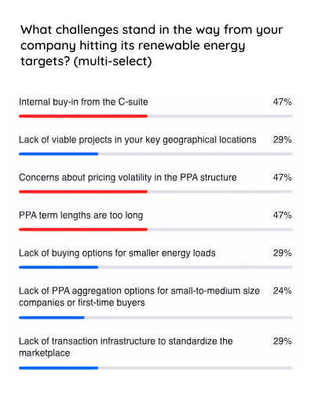
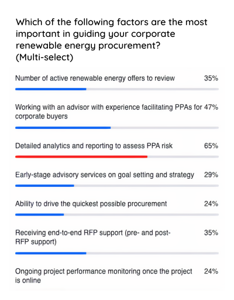
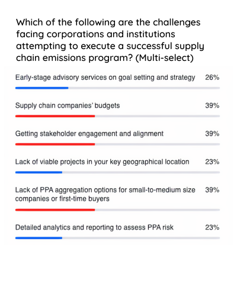
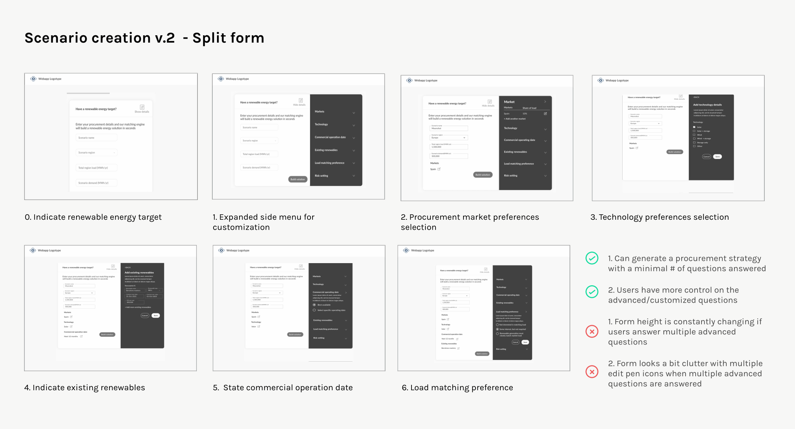
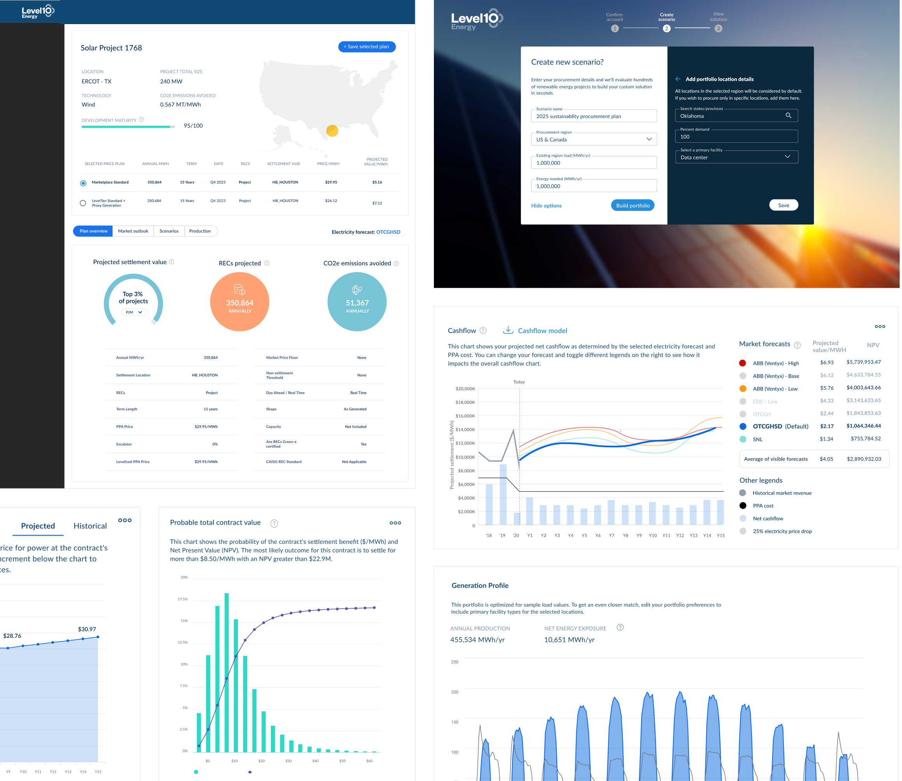

Overview
In 2018, LevelTen Energy (L10) launched its data-driven two-sided marketplace to make it easier for companies to search for the best possible renewable assets via a virtual power purchase agreement (VPPA) to meet their sustainability energy targets and goals.
The goal of this project was to design beyond the early adopters and expand our reach to help more companies meet their sustainability goals.
The Challenge
The beginning of 2019 seemed like a promising year for LevelTen; it successfully raised $20.5M in Series B funding and closed an unprecedented aggregated renewable energy portfolio deal with Starbucks.
But contrary to the success earlier of the year, sales stagnated after the Starbucks deal. It had become apparent in mid-2019 that LevelTen was struggling to portray the value of the product to direct C&I customers. In short, we were not winning and we needed to change quickly.
How could we design beyond the early adopters to reach a wider, more diverse user base to foster growth of the LevelTen energy marketplace?
Research
Having a holistic understanding of the existing product, renewables buyers' actual experience and challenges are crucial. To gain insights to help define the design approach, we initiated a few rounds of research and interviews with internal stakeholders, early adopters of the platform, and prospective renewable energy buyers.
In addition to that, since sophisticated analytics is the bedrock of the product, we wanted to ensure we provided meaningful data that would provide the highest impact on the end user's success. Some key questions we tried to answer include:
- What are key metrics we need to visualize to help users make informed decisions?
- How will different stakeholders from different departments such as sustainability, accounting, legal and marketing use the data?
- To what extent do users need to interact with the data presented by the product?



Our research encompassed:
- Internal interviews with stakeholders, subject matter experts, and the sales team to understand their vision for the project, what they perceived as how the project aligns with the business goals, and what they identified as their key success metrics. These internal perspectives provided an initial lay of the land that helped formulate our research methods and provided a basis of assumptions to test during customer research.
- Interviewed and got feedback from early adopters on their experience using the platform and observed how they worked with the information and what was most helpful to them.
- Conducted click-path analysis based on users' click streams. We segmented users based on their company size/type and then compared those user types and analyzed their search queries.
- To understand what prospective renewable energy buyers' needs were, and how our product's approach addressed those needs. I dropped in on sales demo calls and webinars to hear first-hand what were some concerns they had.
Insights
Through user interviews, contextual inquiry, and analyzing the gathered data, it became apparent that there were massive pain points in the Energy Marketplace.
- Confusing technical terms and paradox of choice on platform
Many customers were lost and confused by the world of renewable projects and technical terms referenced in the LevelTen platform. Thus, they struggled to identify projects that fit their sustainability goals. - Difficult to evaluate and compare renewable assets to determine which projects bring buyers optimal values
New users have trouble understanding the optimal revenue and risk distributions and how to quantitatively compare one project to another to determine the best investments. - No easy way to share and access projects analytics or key information to decision makers across cross-functioning teams
Procurement managers often are not the primary decision makers on executing VPPA transactions. They mostly serve as an influencer on the decision making process. They need to share key analytics and information for renewable projects to gain buy-ins and approval from cross-functional leaders from finance, sustainability, legal, and marketing departments.
From research, we learnt that here are the questions potential renewable buyers care about:
- What's the risk associated with this PPA?
- How probable is the worst case scenario and what's the spread of possible outcomes?
- How is this PPA going to perform over each year of my contract?
- How can I compare the risk of one PPA to another?
- How can I choose a PPA that aligns with my organization's tolerance for risk?
- How can I prove this to my internal stakeholders and leadership?
Problem Definition & Opportunity
It became evident that the rich energy and financial data that once helped us propel in the early days had become a double-edge sword. The analytics had become a challenge and sticking point for both potential buyers and our internal sales team. We needed to rethink the entire onboarding, search, and browsing experience from the ground up to accommodate all companies, no matter their previous knowledge of the renewable energy space.
UX problem: The renewable projects' browsing and discovering experiences on LevelTen were filled with complex terms and unexplained analytics. As a result, it hindered the user's decision-making process and ultimately led to negative emotions towards the application.
Design goals: The redesign set out to:
- Reduce user frustration by presenting user-centric relevant information throughout the renewable browse and discover experience to eliminate cognitive overload.
- Streamline and create a more intentional, intuitive experience that makes it easier for users to act quickly with data.
- Buyers feel they found the safest, most valuable asset for their organizations.
Business Problem: High drop-off rate is hurting LevelTen's revenue stream. Potential buyers are confronted with risk and volatile financial data early in the user flow, which confuses and discourages user engagement to the point of abandoning the platform before they are presented a holistic picture of what value different renewable projects or energy aggregation bring to their organizations.
Business goals: By streamlining and simplifying the user's browsing and discovery experience, we hope to:
- Increase acquisitions by opening the funnel and get more buyers into the platform
- Increase user engagement and stickiness of the platform
- Increase retention by having more repeat buyers
Explorations and Iterations
After the research phase, I started to do some exploration from different financial service firms to help draw inspirations on the onboarding flow. I created sketches and rough prototypes and got those ideas in front of stakeholders, and based on their feedback I iterated on the design. After having a go-ahead from the stakeholders on the mockups, we began to conduct usability tests with the low-fidelity mockup.
How to structure information and data to be user-friendly?
It is important to disclose the "right" amount of relevant information progressively and separate information into an easy-to-digest format so users are given space to venture into the more complex information at their pace.
To help reduce information overload for our users, I did multiple rounds of iterations and testing to identify the central information from the nice-to-know-materials that matches the information needs of users.


How to organize the scenario creation questions?
Through testing, it was revealed that the v.1 Typeform conversation style layout was too lengthy; it was asking too many inessential questions. To address those concerns, I decided to put the nice-to-have questions (ex. desired energy markets, specific technologies, buyer's risk tolerance etc.) in the collapsed advanced settings panel by default and reduced the preference questions from 8 to 3. In doing so, we are asking just enough information from the user to minimize disruption and friction points before the user can generate a personalized sustainability solution.


Where might we let users build their sustainability solution?
It is crucial to provide values and guidance during the onboarding and browsing process to build confidence and trust for potential buyers. The initial idea was to integrate the request access page on the marketing site with the app, where potential buyers would be guided to create their first procurement strategy at the sign up flow.
After consulting with the sales team, they wanted to allow only business emails and restrict personal and competitors email addresses from signing up. That turned out to be more technically challenging than we expected. We resorted to a hybrid solution where sales will continue to grant users credentials to the platform but the portfolio creation tool will be injected to be part of the account confirmation flow.
UX writing — Guided tooltips: The copy we chose in our design is just as important and critical as anything else. We needed to create content that's more digestible and contextual in the interface and focus much on the buyer's needs. The Director of Product and I went through the content to ensure it was clear, made sense, and felt guiding — and most importantly we gave enough context for everything.
Final Product
The final result of the redesign elevated the overall browse and discovery experience by moving away from the one-size-fits-all experience.
Corporate carbon off-takers are now presented with relevant data analysis and personalized recommendations that speak uniquely for their preferences and needs to confidently find their next renewable asset to reach their sustainability goal.

Build Your Sustainability Strategy in a Few Clicks
And in a few clicks, personalized project recommendations are generated to help them attain their sustainability goal.
The scenario creation tool allows buyers to model procurement scenarios based on their renewable needs.
Meet the Personalized Sustainability Solution
Buyers can confidently choose the best renewable project(s) to attain their sustainable goals from the personalized recommendations. After users fill in the scenario creation form, our LTE dynamic matching engine immediately generates recommendations and strategies tailored to the buyer's target and preferences.
Making Smart Data-Informed Decisions
We deliver sophisticated insights from built-in analytics to help buyers secure the best value projects by making it easy to evaluate the risk and value of each PPAs.
In addition, procurement managers can download a PDF format of the key analytics to circulate and share information to different departments within the organizations to win internal stakeholder approval: a key barrier in the PPA process.
Better Understand Different Trade-offs
On the Scenarios page, we give buyers a procurement workspace to create multiple scenarios in parallel, they can compare and contrast the risk and value of different procuring strategies varying from financial value, price, impact to renewable share, and carbon emissions avoided.
In doing so, they can gain a better understanding of the tradeoffs between each sustainability goal and determine which is the right project(s) to achieve their overall target, whether it's next year or several years in the future.
Usability Testing & Feedback
Testing was conducted at various phases of the project.
Moderated & unmoderated card sorting — Prior to building a lo-fi mockup, I conducted multiple card sorting exercises with external partners and internal LevelTen employees to get early feedback on the product's information architecture to ensure it matches user's expectations.
Mid-fidelity prototypes were tested with stakeholders weekly to get feedback on the content, functionality, and interactivity of the design.
Beta-testing — Before releasing the app, we tested the design with a group of existing customers and partners to gain a deeper understanding of how the product will be used in the real world.
Impact
This was a major project with a lot of design work to improve the user flow and detailed interactions. After eight months of brainstorming, strategizing, sketching, designing and developing, we released our first of many updates for Marketplace 4.0. The launch was successful and managed to gain some recognition.
Here are some recent awards the app received.
Learnings
01. Design with real data in mind — I learned to always strive to obtain and design with real-world data; real data is often much messier than one would expect. Using real-world data forces me to engage and understand what I am designing for with the help with the analytics team. It allows me to think hard and deep on what info to prioritize and how to represent them in a useful and digestible format for users.
02. How to adapt to changing requirements — Shifting priorities, technical constraints, new timelines lead to ongoing scope change. I had to adapt to those changes and ensure a quality product is delivered on time.
03. Adjust design solution presentation methods to different audiences — Learning your audience and having a general understanding on how they work or think through a problem is vital in communicating and presenting design solutions. That dictates the methods I choose to convey meanings and values on the design. Often, even a design solution effectively solves the problems at hands, but if it's not communicated in a comprehensible manner, it may not be implemented.